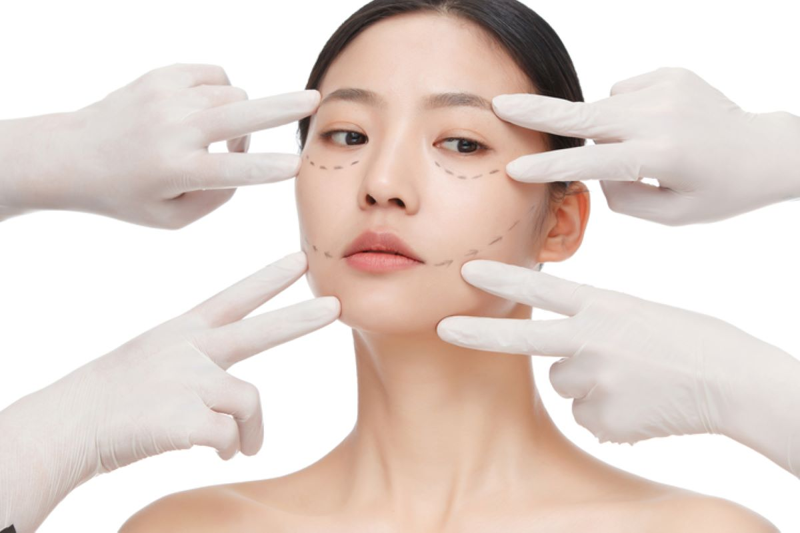

NEWS LETTER
DUALPICK
세상이 우리를 어떻게 읽는지 궁금한 시대, 20·30
MAIN
건강
HEALTH
저속노화 식단, 숙면제품, 유전자검사 등 MZ세대가 푹 빠진 ‘셀프케어’ 열풍
건강을 지키는 방법도 달라졌다, MZ세대의 방식으로 몸과 마음을 돌보는 법

중학생이 벌써 "주름 생기면 안돼"…안티에이징 크림도 '쓱'
저속노화 아닌 조기노화?… 어린이까지 삼킨 안티에이징 시장